Week 4 · Day 16 — one pattern behind hydrates, hemiacetals and sugar rings
Organic Chemistry 1
About this lecture
Glucose is drawn in every textbook as a six-carbon chain with an aldehyde at the end. Yet in your blood, well over 99 % of it is a ring, and only a trace is the open-chain aldehyde. The ring forms because the molecule’s own OH adds to its own C=O. That’s the reaction we study today.
Today we learn the one pattern behind it:
Why C=O reacts: a polar, flat carbonyl with an electron-poor carbon
The addition step: nucleophile in, π pair out, tetrahedral product
Base and acid routes: hydrates and hemiacetals, with every proton accounted for
Product classes: hydrate, hemiacetal, acetal, and how water controls the acetal equilibrium
Rings and stereocentres: cyclic hemiacetals, glucose, and new stereocentres
On Day 13 you reduced ketones with NaBH₄. That was already a carbonyl addition; today we see the general pattern.
The carbonyl is polar and flat
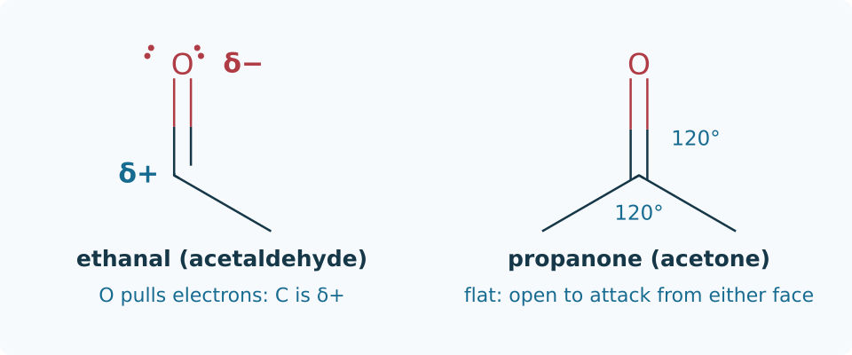
Ethanal with partial charges and propanone with 120 degree angles
Oxygen pulls the C=O electrons towards itself, so the carbonyl carbon is δ+ and attracts nucleophiles. The carbon is trigonal planar, so a nucleophile can approach from either face.
One pattern: nucleophile in, π pair out
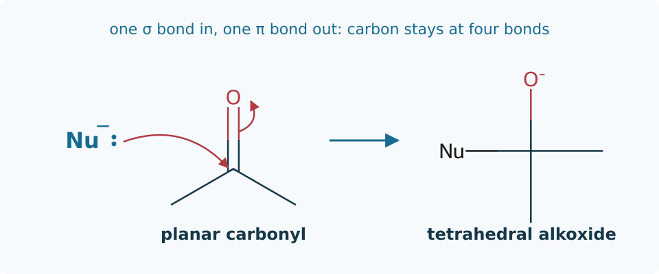
General nucleophilic addition with two curved arrows
Arrow 1: a lone pair on the nucleophile forms the new C–Nu bond. Arrow 2: the π pair moves onto oxygen, which becomes O⁻. Carbon goes from planar to tetrahedral.
Try it: why can’t you draw only the first arrow and keep the C=O?
Carbon would have five bonds. The π bond must open as the new σ bond forms, so carbon stays at four.
Hydroxide adds to ethanal
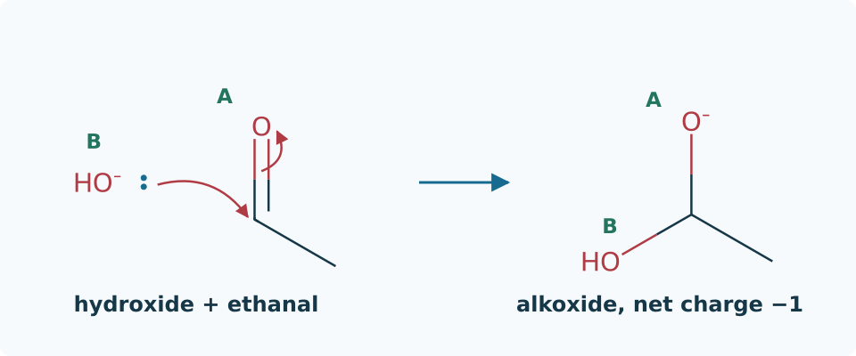
Hydroxide oxygen B attacks ethanal; carbonyl oxygen A becomes the alkoxide
Label the oxygens so you can follow them: A was the carbonyl O, B came in with hydroxide. Total charge stays −1 on both sides.
Try it: after this step, which oxygen carries the negative charge, A or B?
A. It received the π pair. B arrived with its H and is now a neutral OH on carbon.
Water finishes the hydrate
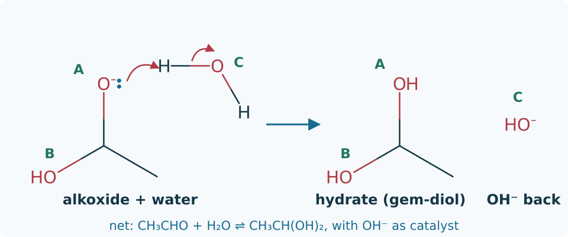
Water protonates the alkoxide to give the hydrate and regenerate hydroxide
The alkoxide takes H⁺ from water; the O–H bonding pair stays on water’s oxygen (C), which leaves as OH⁻. Hydroxide is used and then returned, so it’s a catalyst.
Net: CH₃CHO + H₂O ⇌ CH₃CH(OH)₂, a hydrate (gem-diol).
How much hydrate? It depends on the carbonyl
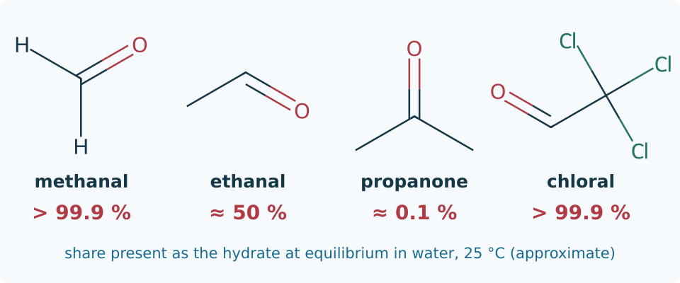
Hydrate share for methanal, ethanal, propanone and chloral
The same mechanism works for all four. Where the equilibrium lies depends on structure: alkyl groups stabilise the C=O; electron-withdrawing groups (like CCl₃) favour the hydrate.
Try it: a student draws a correct hydration mechanism for propanone and concludes the flask is all hydrate. What’s missing?
Equilibrium data. A mechanism shows how species interconvert, not how much of each is present; propanone is about 99.9 % ketone.
In acid, the oxygen is protonated first
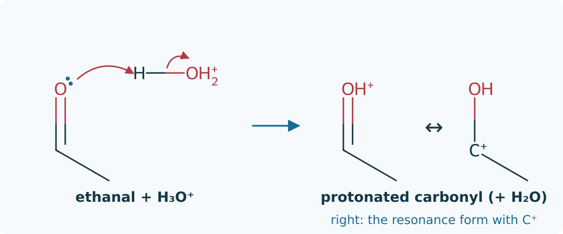
Hydronium protonates ethanal’s carbonyl oxygen
A lone pair on the carbonyl O takes H⁺ from H₃O⁺. The protonated carbonyl is far more electrophilic: its resonance form puts + on carbon. Now even a weak, neutral nucleophile can add.
Base route vs acid route
base-catalysed
acid-catalysed
first step
nucleophile adds to C=O
carbonyl O is protonated
nucleophile
strong, anionic (OH⁻, RO⁻)
weak, neutral (H₂O, ROH)
intermediate
alkoxide, charge −1
oxonium, charge +1
last step
O⁻ takes H⁺ from water
O⁺–H gives H⁺ to water
catalyst
OH⁻ regenerated
H₃O⁺ regenerated
Try it: in methanol with plenty of acid, why don’t we draw CH₃O⁻ as the nucleophile?
It can’t survive there. Methoxide is a strong base and would be protonated at once; the nucleophile in acid is neutral CH₃OH.
Methanol adds to the activated carbonyl
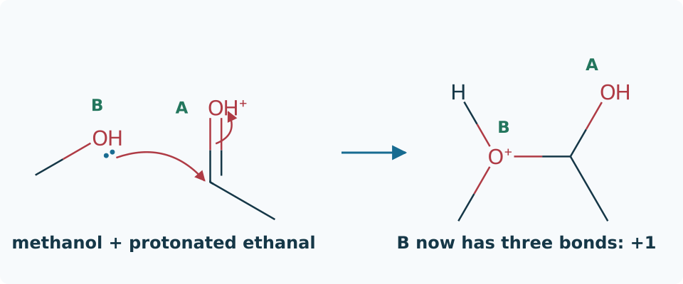
Methanol attacks protonated ethanal
Same two arrows as before. Now the incoming oxygen B ends with three bonds, so it carries the +1. Oxygen A becomes a neutral OH.
Try it: count the bonds and lone pairs on oxygen B after attack. What’s its formal charge?
+1. Three bonds (H, CH₃, C) and one lone pair: 6 − 2 − 3 = +1.
A proton transfer gives the hemiacetal
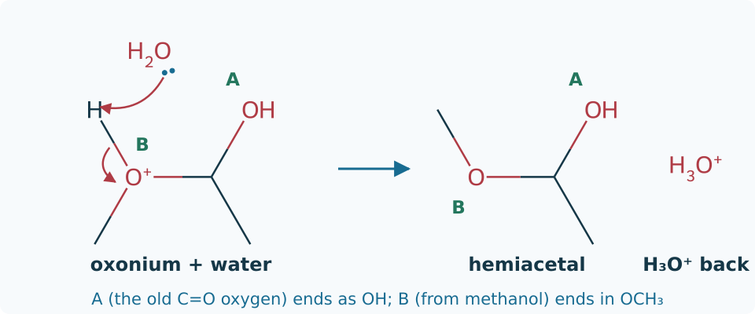
Water removes the proton from oxygen B to give the hemiacetal
Water removes H⁺ from the three-bonded oxygen B, and H₃O⁺ is regenerated. The product, CH₃CH(OH)OCH₃, is a hemiacetal: OH and OR on the same carbon.
Try it: in the hemiacetal, which labelled oxygen is the OH and which is in the OCH₃?
A is the OH, B is the OCH₃. Swapping them would need extra bond-breaking steps that we never drew.
Hydrate, hemiacetal, acetal
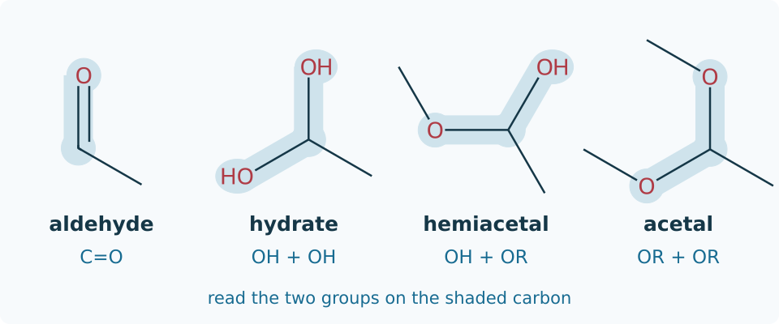
Aldehyde, hydrate, hemiacetal and acetal with the key carbon shaded
Look at the former carbonyl carbon and its two oxygen groups: OH + OH is a hydrate, OH + OR is a hemiacetal, and OR + OR is an acetal.
Try it: classify CH₃CH(OCH₃)₂.
Acetal. Two OCH₃ groups sit on the same carbon. An OCH₃ somewhere else in a molecule would just be an ether.
From hemiacetal to acetal
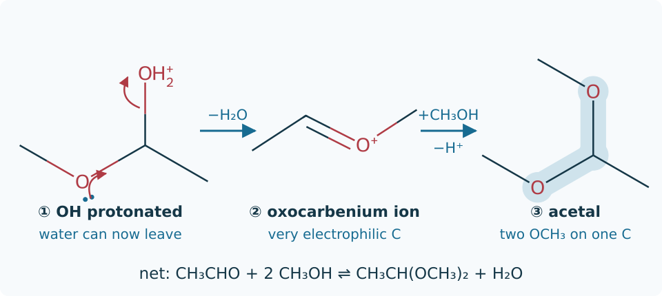
Protonation, loss of water and a second methanol give the acetal
The OH is a poor leaving group, so acid protonates it first. Water leaves, helped by the neighbouring OCH₃ lone pair, and a second CH₃OH adds to the oxocarbenium ion.
Net: CH₃CHO + 2 CH₃OH ⇌ CH₃CH(OCH₃)₂ + H₂O
Water decides the acetal equilibrium
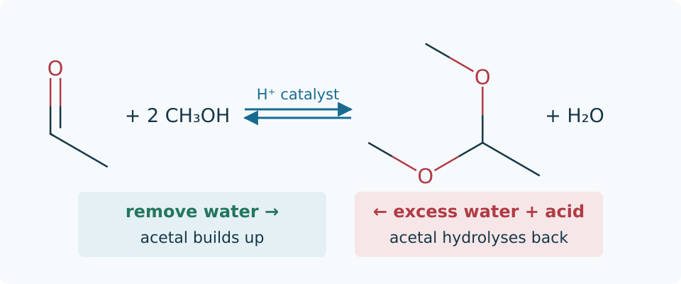
Acetal equilibrium shifted by removing or adding water
Acid speeds up both directions but doesn’t change K. To make the acetal, remove water; to undo it, add excess water with a little acid. In base, acetals are stable.
Try it: you dissolve an acetal in dilute aqueous acid. Which way does the equilibrium move?
Back to aldehyde + alcohol. Water is a product of acetal formation, so a large excess of water pushes the reaction backwards (Le Chatelier).
Does addition create a stereocentre?
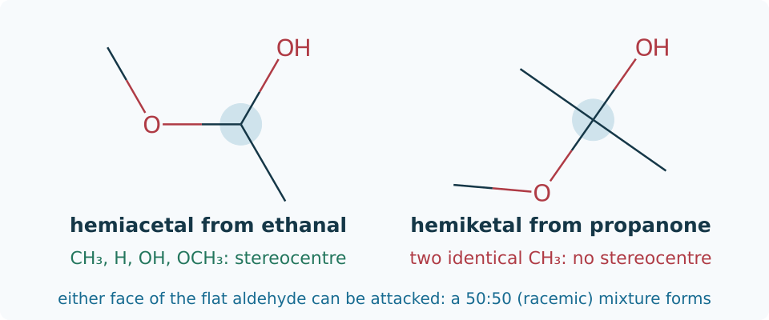
Hemiacetal from ethanal versus hemiketal from propanone
A tetrahedral carbon is a stereocentre only if its four groups differ. From ethanal: CH₃, H, OH, OCH₃, so yes. Attack on either face of the flat C=O is equally likely, giving a racemic mixture.
Try it: methanol adds to propanone to give (CH₃)₂C(OH)OCH₃. Is the former carbonyl carbon a stereocentre?
No. Two of its groups are identical CH₃ groups. Becoming tetrahedral isn’t enough.
A ring from inside one molecule
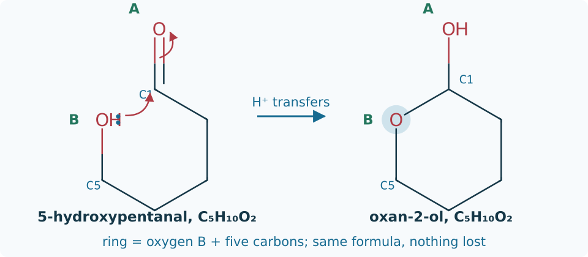
5-Hydroxypentanal closes to a six-membered cyclic hemiacetal
When the OH and the C=O are in the same molecule, the addition closes a ring. Five- and six-membered rings form easily.
Try it: how many atoms are in the ring, and is any water lost?
Six (oxygen B and five carbons), and no water is lost. Both structures are C₅H₁₀O₂; addition only moves atoms around.
Glucose is a cyclic hemiacetal
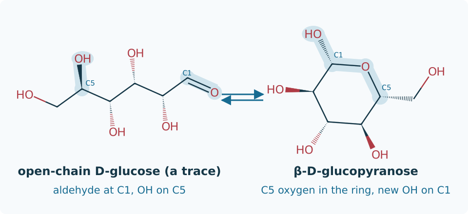
Open-chain D-glucose and β-D-glucopyranose
The C5 OH adds to the C1 aldehyde, giving a six-membered ring. C1 becomes a new stereocentre, so there are two forms: β (about 64 %) and α (about 36 %) in water.
Same pattern, other nucleophiles
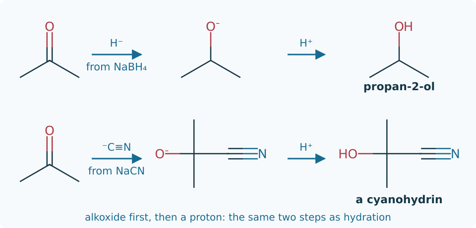
Hydride and cyanide add to propanone
Hydride (from NaBH₄, Day 13) and cyanide add the same way: alkoxide first, then a proton. Only the new group on carbon changes.
Aldehydes keep the addition; esters can lose a group
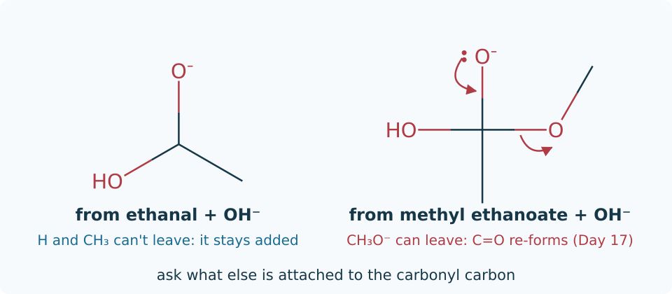
Tetrahedral intermediates from ethanal and from methyl ethanoate
Ask what else is on the carbonyl carbon. An aldehyde or ketone has only H or C, which can’t leave. An ester has OR, so the C=O can re-form and push RO⁻ out: addition, then elimination.
Mistakes we see every year
mistake
fix
only one arrow, so carbon has five bonds
the π pair must move to O
the minus charge kept on the incoming OH⁻
count bonds: the old C=O oxygen is O⁻
OH⁻ or CH₃O⁻ drawn in strong acid
in acid, use neutral H₂O or CH₃OH
H⁺ appearing or vanishing
name the donor and acceptor every time
oxygen labels swapped between steps
label A and B and follow them
water removed when a hemiacetal ring forms
addition: same formula
OH turned into OR in one arrow
acetal needs protonation, loss of water, second ROH
“a valid mechanism, so it’s all hydrate”
the equilibrium decides the amount
Summary
concept
key fact
carbonyl
δ+ carbon, planar, attacked from either face
addition
Nu in, π pair to O, tetrahedral carbon
base route
add, then protonate O⁻ (OH⁻ catalyst)
acid route
protonate O, add, deprotonate (H₃O⁺ catalyst)
hydrate · hemiacetal · acetal
OH+OH · OH+OR · OR+OR on one carbon
acetal equilibrium
remove water to form; excess water to hydrolyse
rings
internal OH → cyclic hemiacetal (glucose)
mechanism vs amount
a pathway doesn’t give the equilibrium mixture
Next: acyl chemistry, when a group can leave (Day 17). Practice:exercises · self-check